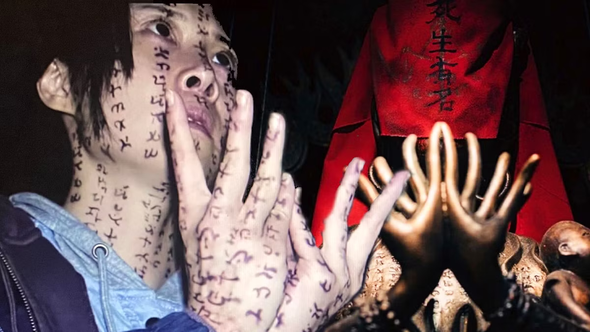
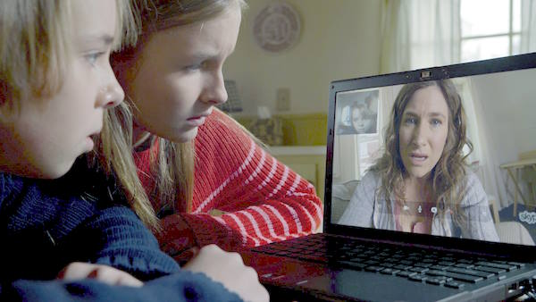

Incantation
2022 - Horror, Mystery

Vor sechs Jahren wurde Li Ronan verflucht, nachdem sie ein religiöses Tabu gebrochen hatte.
Jetzt muss sie ihre Tochter vor den Folgen ihres Handelns schützen – und kämpft gegen
eine dunkle übernatürliche Macht, die sie nicht loslässt.
- Regie: Kevin Ko
- Besetzung: Hsuan-yen Tsai, Sin-Ting Huang, Ying-Hsuan Kao
- Bewertung: 6,3 / 10 (29.2K Stimmen)
- Laufzeit: 110 min
- FSK: 18
The Visit
2015 - Horror, Mystery, Thriller

Zwei Geschwister verbringen eine Woche bei ihren Grosseltern, während ihre alleinerziehende
Mutter Urlaub macht. Becca möchte einen Dokumentarfilm über die Familie drehen –
doch bald entdecken sie und ihr Bruder Tyler ein dunkles Geheimnis.
- Regie: M. Night Shyamalan
- Besetzung: Olivia DeJonge, Ed Oxenbould, Deanna Dunagan
- Bewertung: 6,3 / 10 (173.2K Stimmen)
- Laufzeit: 94 min
- FSK: 12